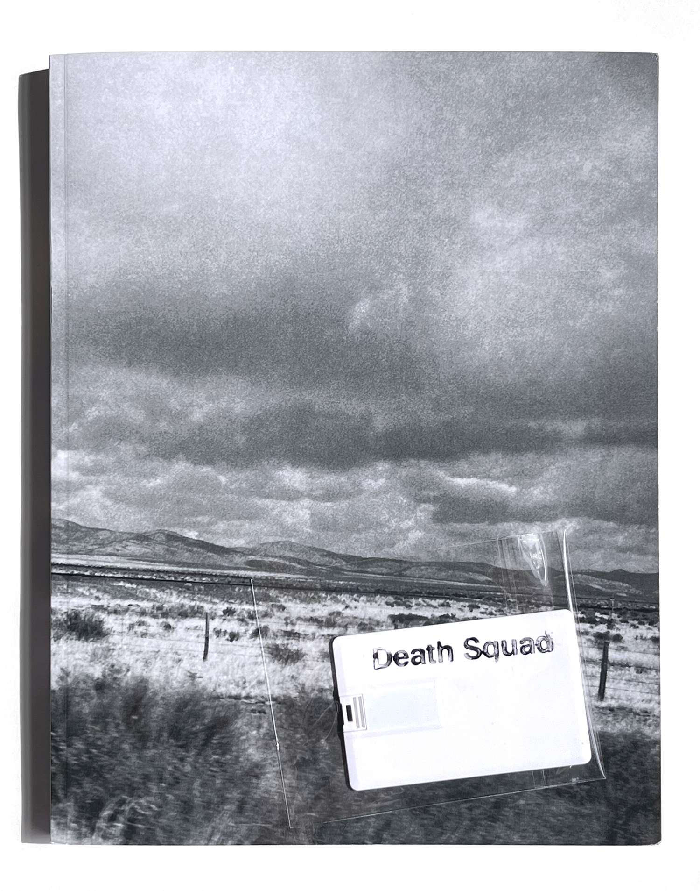
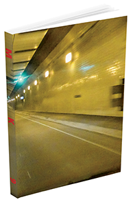
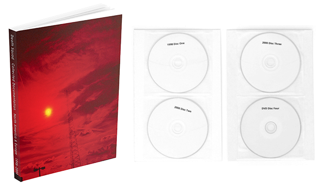
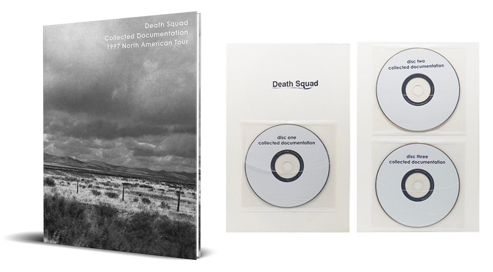

* Second Edition Printing * 
200 pages include: 145 photos, 33 handouts, 47 flyers,
writings, documents and an extensive interview.
Gloss cover instead of matte, no flaps and a USB card with the same audio as the original version instead of the three CDs. Same content with some slight layout adjustments.
Added some thoughts about a good friend who passed last year.
The first printing should be available from
Influencing Machine Records in California.
In 1997 Michael Nine set off on his first tour as Death Squad. Beginning in Northern California, where he lived, the tour was an ambitious six month journey across the United States and into Canada, comprised of sixty shows. Amidst the chaos he managed to extensively document his experiences, taking close to four hundred photos and preserving flyers, posters and handouts.
After decades of touring, Michael looks back at this first venture and shares his recollections; digging into the memories of each show, the people and places encountered along the way. The reader is taken on this journey and plunged into the underground noise scene. The highs, lows and absurdities are amplified.
Folder 1 (DISC ONE) Folder 2 (DISC TWO) Folder 3 (DISC THREE)
1. KCPR 91.3 Dark Market Broadcast - San Luis Obispo, CA 3/25/97 (Excerpt 8:13)
2. Zoot’s Coffeehouse - Detroit, MI 6/24/97 (25:38)
3. CHUO 89.1 Radio Shakuhachi - Ottawa, ON 5/14/97 (Promo + Excerpt 5:47)
4. Vinyl Locust - Milwaukee, WI 6/30/97 (14:03)
5. WVUA 90.7 Tuscaloosa, AL 7/15/97 (Excerpt 8:24)
6. Sound Exchange - Houston, TX 4/13/97 (Excerpt 7:22) recorded by Keith Brewer
1. The Moroccan Café - Salt Lake City, UT 7/29/97 (12:53)
2. KTRU 96.1 The Genetic Memory Show - Houston, TX 7/21/97 (19:21)
3. Unknown Live Show (Excerpt 7:42)
4. KRCL 90.9 Salt Lake City, UT 7/29/97 (18:20)
5. 1st Ave. Café & Lounge - Fargo, ND 7/7/97 (Excerpt 4:07)
6. CJAM 91.5 - Misanthropy 511 - Windsor, ON, Canada 6/23/97 (Excerpt 4:45)
7. Salon Zwerge - Chicago, IL 6/17/97 (Excerpt 06:32)
1. WLUW 88.7 Something Else Radio Show - Chicago, IL 6/15/97 (21:23)
2. KDSU 91.9 Trout Mask Radio Part One - Interview - Fargo, ND 7/6/97 (8:15)
3. KDSU 91.9 Trout Mask Radio Part Two - Set / Interview - Fargo, ND. 7/6/97 (23:17)
4. KDSU 91.9 Trout Mask Radio Part Three - Interview - Fargo, ND. 7/6/97 (9:24)
5. The Terminal Bar - Minneapolis, MN 7/1/97 (Excerpt 6:19)

MK9 Book
2025 Neural Operations NO39
ISBN 978-1-7780934-4-9
Edition of 300
8.5 x 11 inch full color 348 page softcover book.
Includes 130 flyers, 85 handouts, 76 photographs, 65 photo cards,
artwork, writings and an interview.
Plus, a download code for 7 compilation tracks
and 2 archive videos; Procedure 2002 + Paranoia and Attrition 2003.
The first time these videos have been made widely available.
Archive photos included by these amazing people:
Randy Yau, Gaya Donadio, Kris Wlodarczyk, Sylvie Cartiaux,
Gretchen Heinel, Ullrich Bemmann, Scott Arford and Joe Colley.
Michael Nine started MK9 when Death Squad ended.
It is a logical progression, a continuation of a creative vision. Death Squad was about a general rage towards the self and the world, whereas MK9 is a more focused and exacting look at our species and the environment we live in. Presented are snapshots of now, moments about and within this existing human timeline, using projections, handouts and performances.
This book covers the first twenty five years of work by Michael Nine as MK9.
Downloadable Files:
Unit MK9 - Procedure Video 2002
Unit MK9 - Attrition and Paranoia Video 2003
“5150” and “Catheter” - 7Hz CD 2002
“Pretense” - Cataclastic Fracture Volume 2 CD 2005
“Neuro Toxic Thought” - America, the Grave Compilation 2012
“Explain” - The Big California Noise Compilation 2014
“Mind Loop” - A Club|Debil Compilation Cassette 2016
“Social Services” - Tremors: A Vancouver Compilation Caseette 2021
“Holding Pattern” - Isolation Compilation Cassette 2021

Death Squad - Collected Documentation:
North America & Europe 1998 - 2000
(ISBN: 978-1-7780934-1-8)
8.5 x 11", 204 pages perfect bound, edition of 250, three CDs and one DVD. Included are two download codes: Theological Genocide 25th Anniversary edition & Radio shows from the 1997 book that were only available in the special edition version.
Contributions by: Scott Arford (Radiosonde), Lee M. Bartow (NTT, Theologian), J. Frede (Chapter 23), Russ Kent (KPFA, KFJC), Tomas Novak (Skrol) & Jason Quell (Quell). These artists share their first-hand accounts of performing, touring and collaborating with Michael Nine.
Once Death Squad had completed the 1997 tour and The Pain Factory had ended, Michael began taking on more projects. In 1998 he started a brand-new public access TV show, Fuck TV, and a Europe / North America tour with Radiosonde and Chapter 23. Continuing into 1999, Death Squad would perform one of the most controversial pieces to date, Intent (aka The Gun Show), which was followed by Enacted Hostage Sequence. Michael finished off the millennium with a near death experience in Chicago. The conclusion of Death Squad was in 2000 with another international tour ending with Closing Statements in San Francisco.
This book follows the events and documentation from these final years. With extensive decades old ephemera, saved and presented. There are handouts with blood stains, flyers from international shows and photographs taken by Michael and others. Key figures’ recollections are also included, adding their perspectives of all the events. Along with radio interviews, promotional recordings, unreleased tracks and more.
Michael Nine has been creating and performing audiovisual works for three decades. He has released close to one hundred titles and has been touring extensively since 1997. In the mid-nineties, Michael produced two public access television shows, The Pain Factory and Fuck TV, both of which were recently released for the first time on DVD. In 2001 Michael started to release material and tour under the name MK9. He is now based in Nova Scotia, Canada. This is his second self published book, a sequel to Death Squad - Collected Documentation 1997 North American Tour.
Track Listings
1998 Disc One
1. Radiosonde – Promo Tour CD 1998 (6:46)
2. Chapter 23 – Promo Tour CD 1998 (13:18)
3. Death Squad – Promo Tour CD 1998 (4:02)
4. Radiosonde Live at 7hz – San Francisco, CA 9.12.98 (Excerpt 5:26)
5. Chapter 23 Live at 7hz – San Francisco, CA 9.12.98 (Excerpt 9:13)
6. Death Squad Live – Lahti, Finland 9.26.98 (Excerpt 3:05)
7. Location Unknown – Michael on train complaining, audio from video (3:28)
8. KFJC 89.7 Radio Free Hatred – Los Altos, CA – Death Squad Interview 12.10.98 (19:19)
2000 Disc Two
1. Quell Tour Promo CD Live 6.6.99 (3:42)
2. Quell Tour Promo CD Live 9.18.98 (7:00)
3. Death Squad Live – Trnava, Slovakia 4.6.00 (28:03)
4. Quell Live – Wroclaw, Poland 4.7.00 (13:30)
5. Death Squad Live – Duisburg, Germany 4.1.00 (Excerpt 3:50)
6. Death Squad last confession before final show (12:52)
2000 Disc Three
1. KPFA 94.1 The No Other Radio Network – Berkeley, CA 7.12.00 (24:39)
Scott Arford, Kush Arora and Michael Nine interviewed by Mr. Hate
2. Death Squad – Unreleased track recorded on tour 1998 (14:14)
3. Alternate soundtrack for final show (23:00)
DVD Disc Four
1. Spoken Video 1996 (6:04)
2. Theological Genocide 1998 (50:14)
3. Apocalyptic Pathology 1996 (27:07)
4. Double Murder Suicide 1998 (51:35)
5. Final Performance Video Projection 2000 (13:12)
Available from
Neural Operations (Canada / US) In Stock
Scream and Writhe (Canada / US) Out of Stock
Cavity Curiosity Shop (Victoria, Canada) In Stock
Skeleton Dust Records (US) In Stock
Disc Union (Japan) Out of Stock

______________________________________________________
______________________________________________________
Death Squad - Collected Documentation :
1997 North American Tour Book
(ISBN 978-1-7780934-0-1)
200 pages include:
145 photos, 33 handouts, 47 flyers,
writings, documents and an extensive interview.
3 CDs of unreleased live shows and radio performances.
8.5" x 11" perfect bound printed on #100 paper.
Edition of 300
From the publishers
Neural Operations (Canada / US) - SOLD OUT
Influencing Machine Records (US) - In Stock
Distributors
Cavity Curiosity Shop (Victoria, BC) SOLD OUT
Scream and Writhe (Canada / US) - SOLD OUT
White Centipede Noise (Germany) SOLD OUT
Disc Union (Japan) SOLD OUT
Skeleton Dust Records (US) SOLD OUT
In 1997 Michael Nine set off on his first tour as Death Squad. Beginning in Northern California, where he lived, the tour was an ambitious six month journey across the United States and into Canada, comprised of sixty shows. Amidst the chaos he managed to extensively document his experiences, taking close to four hundred photos and preserving flyers, posters and handouts.
After decades of touring, Michael looks back at this first venture and shares his recollections; digging into the memories of each show, the people and places encountered along the way. The reader is taken on this journey and plunged into the underground noise scene. The highs, lows and absurdities are amplified.
DISC ONE
1. KCPR 91.3 Dark Market Broadcast - San Luis Obispo, CA 3/25/97 (Excerpt 8:13)
2. Zoot’s Coffeehouse - Detroit, MI 6/24/97 (25:38)
3. CHUO 89.1 Radio Shakuhachi - Ottawa, ON 5/14/97 (Promo + Excerpt 5:47)
4. Vinyl Locust - Milwaukee, WI 6/30/97 (14:03)
5. WVUA 90.7 Tuscaloosa, AL 7/15/97 (Excerpt 8:24)
6. Sound Exchange - Houston, TX 4/13/97 (Excerpt 7:22) recorded by Keith Brewer
DISC TWO
1. The Moroccan Café - Salt Lake City, UT 7/29/97 (12:53)
2. KTRU 96.1 The Genetic Memory Show - Houston, TX 7/21/97 (19:21)
3. Unknown Live Show (Excerpt 7:42)
4. KRCL 90.9 Salt Lake City, UT 7/29/97 (18:20)
5. 1st Ave. Café & Lounge - Fargo, ND 7/7/97 (Excerpt 4:07)
6. CJAM 91.5 - Misanthropy 511 - Windsor, ON, Canada 6/23/97 (Excerpt 4:45)
7. Salon Zwerge - Chicago, IL 6/17/97 (Excerpt 06:32)
DISC THREE
1. WLUW 88.7 Something Else Radio Show - Chicago, IL 6/15/97 (21:23)
2. KDSU 91.9 Trout Mask Radio Part One - Interview - Fargo, ND 7/6/97 (8:15)
3. KDSU 91.9 Trout Mask Radio Part Two - Set / Interview - Fargo, ND. 7/6/97 (23:17)
4. KDSU 91.9 Trout Mask Radio Part Three - Interview - Fargo, ND. 7/6/97 (9:24)
5. The Terminal Bar - Minneapolis, MN 7/1/97 (Excerpt 6:19)
______________________________________________________
The audiobook has been removed.
There are some new over reaching terms of use
with the distribution service that I originally submitted my book to, since their acquisition by Spotify.
I will be finding a new distributor.
The audio sample on soundcloud will remain up.
______________________________________________________
______________________________________________________